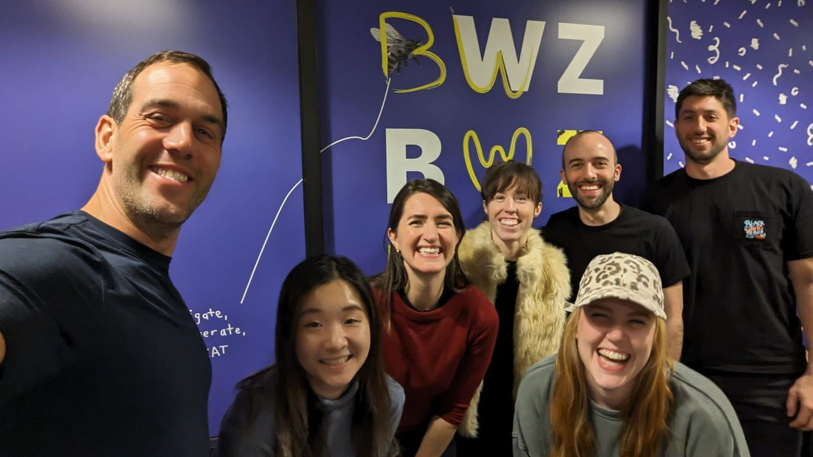
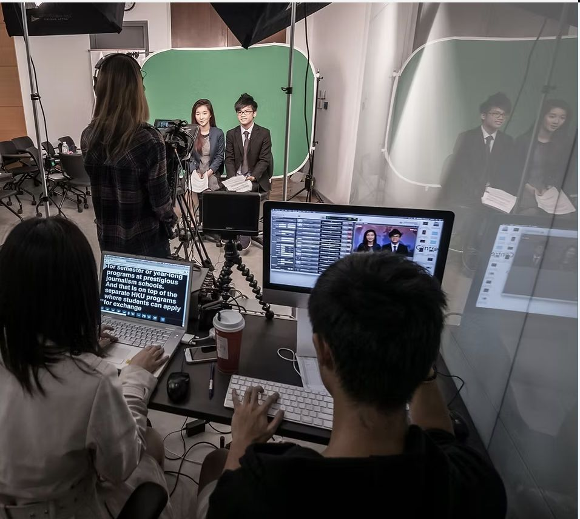

Strategic, human-first B2B writing
Thoughtful content and purposeful storytelling shape how we work, connect, and live.
That belief guides everything I create — from long-form thought leadership to full-funnel campaigns that build clarity, trust, and momentum.
I simplify complex ideas — from nebulous workflow trends to go-to-market strategies — to make information more accessible, spark curiosity, and connect audiences to meaningful solutions.
Currently I’m Content Operations Manager at People Managing People, an HR publication under Black & White Zebra, collaborating with cross-functional teams on product launches, content strategy, and team enablement.
I design workflows and systems that reduce busywork, scale content thoughtfully, and let teams experiment faster.


A winding path, one clear thread
I began my career chasing stories as a field reporter in Hong Kong’s radio newsrooms, then moved into PR at Ogilvy — learning how narratives are shaped from the inside.
After relocating to Canada during the Umbrella Movement, I sought a slower, more intentional pace of work and life. Since then I’ve written for lifestyle and CPG brands, launched products in regulated industries like cannabis and crypto, and now focus on the future of work.
Content strategy, thought leadership, editorial operations
Available for select freelance and advisory projects. Say hello with a line about what you’re making.